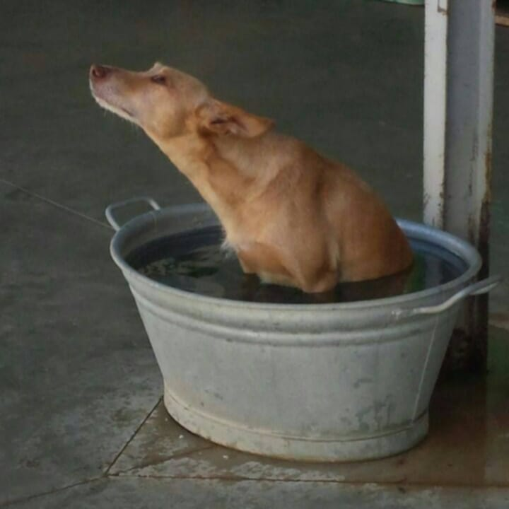
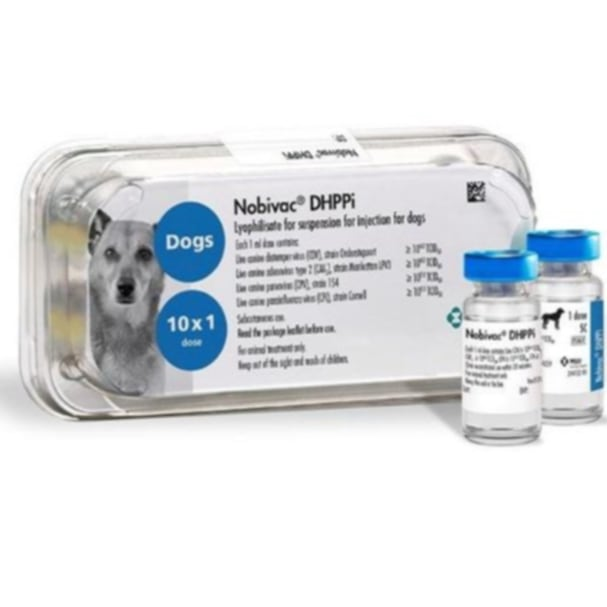
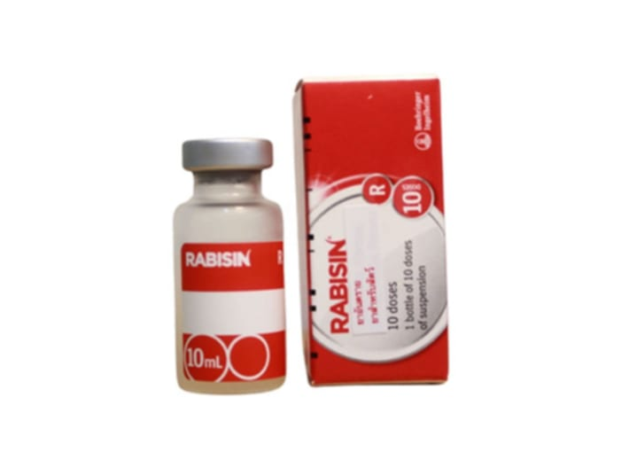
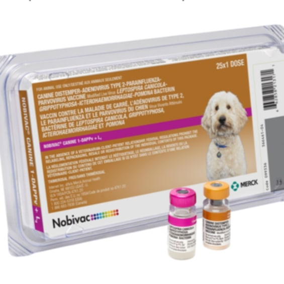

ພະຍາດຫັດໝາ
CANINE DISTEMPER

+ Canine Distemperພະຍາດຫັັດໝາ ເປັນພະຍາດຕິດເຊື້ອໄວລັສທີ່ຮ້າຍແຮງໃນໝາ ເຊິ່ງໄວລັສນີ້ທຳລາຍຫຼາຍລະບົບໃນຮ່າງກາຍ
ທັງລະບົບປະສາດ, ລະບົບຫາຍໃຈ, ລະບົບຍ່ອຍອາຫານ ແລະ ຜິວໜັງໂດຍສະເພາະໃນໝານ້ອຍ ຫລື ໝາທີ່ບໍ່ເຄີຍໄດ້ຮັບວັກຊີນ ອັດຕາການຕາຍສູງ ຖ້າບໍ່ຕາຍກໍພິການ
ທາງປະສາດຕະຫຼອດຊີວິດ ສາມາດຕິດຕໍ່ໄດ້ງ່າຍ ຜ່ານການສຳພັດກັບນ້ຳລາຍ, ນ້ຳມູກ, ປັດສະວະ ຫຼື ອາຈົມຂອງໝາທີ່ຕິດເຊື້ອ ໄລຍະຟັງຕົວ 3-7 ມື້ ບາງຕົວອາດຈະນານຈົນຮອດສອງອາທິດກໍມີ
+ ໄລຍະທຳອິດ
- ອາການທາງລະບົບຫາຍໃຈ : ຫາຍໃຈລຳບາກ, ໄອ ຈາມ.
- ອາການລະບົບທາງເດີນອາຫານ : ອາຈຽນ, ທ້ອງເສຍ, ເບື່ອອາຫານ.
+ ໄລຍະຮູນແຮງ
- ອາການທາງລະບົບປະສາດ : ຊັກ, ຕົວສັ່ນ, ຍ່າງເຊ,ກ້າມເນື້ອກະຕຸກ, ມີພືດຕິກຳທີ່ປ່ຽນໄປເຊັ່ນວ່າ ຍ່າງເປັນວົງ ຫຼົງທິດຫຼົງທາງ
+ ອາການອື່ນໆ
- ຜິວໜັງໜາແຂັງບໍລິເວນດັງ ແລະ ອຸ້ງຕີນ, ຕາແດງ ມີຂື້ຕາຂຸ້ນ, ຊືມ ອ່ອນແຮງ ນ້ຳໜັກລົງ
ວັກຊີນປ້ອງກັນພະຍາດຫັດໝາ(CD-Vassine)

ສ່ວນຫຼາຍ ວັກຊີນພະຍາດນີ້ ເປັນວັກຊີນລວມ ສາມາດສັກປ້ອງກັນໄດ້ຫຼາຍກວ່າ
1 ພະຍາດ ເປັນຕົ້ນແມ່ນສາມາດສັກປ້ອງກັນລຳໄສ້ອັກເສບ,ໄວລັດຕັບເປັນຕົ້ນ.
ມີລັກສະນະເປັນຜົງ ສັກໄດ້ທັງໝານ້ອຍ ແລະ ໝາທີ່ບໍ່ເຄີຍໄດ້ຮັບວັກຊີນມາກ່ອນ
ບໍ່ແນະນຳໃຫ້ໃຊ້ກັບ ແມ່ໝາທີ່ກຳລັງຕັັ້ງຄັນ ແລະ ແມ່ໝາທີ່ຍັງໃຫ້ນົມລູກຢູ່
+ ວິທີໃຊ້ ແບບຜົງສັກ
- ຂື້ນກັບແກ້ວບັນຈຸ ເຊັ່ນ ແກ້ວ 1ເຂັມ ປະສົມນ້ຳລະລາຍ ທີ່ມານຳວັກຊີນ 1ມລ,ສັ່ນໃຫ້ລະອຽດກ່ອນໃຊ້, ສັກໃສ່ກ້າມຂາ ໂຕລະ 1ມລ ຫຼັງເປີດຂວດແລ້ວໃຫ້ໃຊ້ທັນທີ ບໍ່ເກີນ 2 ຊມ
- ການເກັບຮັກສາ : ຮັກສາໃນອຸນຫະພູມ 4 ອົງສາ ກຸ້ມໄດ້1ປີ ເວລາຍ້າຍວັກຊິນ ຄວນຮັກສາໃຫ້ຢູ່ໃນຄວາມເຢັນ ແລະ ບໍ່ໃຫ້ຖືກແສງແດດ.
+ ຂໍ້ແນະນຳ
- ຫ້າມສັກໃຫ້ສັດທີ່ບໍ່ແຂງແຮງ ອ່ອນເພຍ ຫຼື ປ່ວຍຢູ່ແລ້ວ.
- ຈົງດູແລ ເບິ່ງແຍງສັດຂອງທ່ານໃຫ້ດີ ຖ້າສັດເກີດເປັນພະຍາດມາ ຈັບແຍກທັນທີ ແລ້ວໃຫ້ຢາ (ທີ່ບໍ່ແມ່ນວັກຊີນ) ຕາມສັດຕະວະແພດແນະນຳ ຫຼື ພານ້ອງໄປຄີນິກສັດໃກ້ບ້ານທ່ານ.
ພະຍາດວໍ້
RABIES VIRUS
+ ນິຍາມ: ເປັນພະຍາດຕິດເຊື້ອໄວລັສທີ່ມີຜົນກະທົບຕໍ່ລະບົບປະສາດສ່ວນກາງ ພະຍາດນີ້ສາມາດແຜ່ສູ່ຄົນ
ແລະ ສັດລ້ຽງລູກດ້ວຍນົມທຸກຊະນິດ ໂດຍການຖືກກັດ, ຂູດ ຫຼື ຖືກເລຍທີ່ບາດແຜ ຈາກສັດທີ່ຕິດເຊື້ອ ເຊັ່ນ ໝາ ແມວ
ເປັນຕົ້ນ ຫາກຜູ້ຕິດເຊື້ອບໍ່ໄດ້ຮັບການຮັກສາທັນເວລາ ພະຍາດນີ້ຈະລຸກລາມໄປຍັງລະບົບປະສາດແລ້ວ ຈະບໍ່ສາມາດຮັກສາໄດ້ ແລະ ເສຍຊີວິດໃນທີ່ສຸດ
🗣️ : ອາການຂອງໝາກັບແມວທີ່ເປັນວໍ້ຕ່າງກັນຫຼືບໍ່??
ອາການຂອງໝາ ກັບ ແມວ ມີລັກສະນະຄ້າງຄືງກັນເລີຍ ແຕ່ທີ່ມັນຕ່າງ ຕ່າງນຳນິໄສພື້ນຖານຂອງໝາ ແລະ ແມວ
+ ອາການຂອງໝາທີ່ເປັນວໍ້ :
- ເລີ່ມຕົ້ນ : ຊິມ ຫຼື ຫງຸດຫງິດຜິດປົົກກະຕິ, ປ່ຽນພືດຕິກຳ ເຊັ່ນ ຂີ້ອ້ອນ ກາຍເປັນກ້າວລ້າວ ຫຼື ກັບກັນ, ມັກເລຍບາດໂຕເອງຕະຫຼອດ, ນ້ຳລາຍຢືດໄຫຼ
- ໄລຍະຕື່ນເຕັ້ນ : ດຸຂື້ນ, ຊອກໄລ່ກັດຄົນ ຫຼື ສັັດ, ຢ້ານນ້ຳ ສຽງດັງ ແສງຈ້າ ຫາຍໃຈແຮງ
- ໄລຍະສູດທ້າຍ :ກ້າມເນື້ອເລີ່ມອ່ອນແຮງ ອ້າປາກບໍ່ໄດ້ ນ້ຳລາຍຍ້ອຍ, ຫາຍໃຈລຳບາກ ແລະ ຕາຍໄປໃນບໍ່ກີ່ມື້
+ ອາການຂອງໝາແມວທີ່ເປັນວໍ້ :
- ເລີ່ມຕົ້ນ : ຊິມ ບໍ່ຫຼີ້ນ ມັກຫນີໄປລີ້ , ຕື່ນຕົກໃຈງ່າຍ ຂູ່ ຫຼື ຂູດ ໂດຍບໍ່ມີເຫດຜົນ,ນ້ຳລາຍຢືດໄຫຼ
- ໄລຍະຕື່ນເຕັ້ນ : ດຸຂື້ນ, ຂູດແມ້ກະທັ້ງເຈົ້າຂອງ, ຢ້ານນ້ຳ ສຽງດັງ ແສງຈ້າ ຫາຍໃຈແຮງ, ໂດດໃສ່ຄົນ ຫຼື ສັດອື່ນ
- ໄລຍະສູດທ້າຍ :ກ້າມເນື້ອເລີ່ມອ່ອນແຮງ ອ້າປາກບໍ່ໄດ້ ນ້ຳລາຍຍ້ອຍ, ຫາຍໃຈລຳບາກ ແລະ ຕາຍໃນເວລາໃກ້ຄຽງກັນກັບໝາ
ວັກຊີນພະຍາດວໍ້ (Rabies - VACCINES)

ມີລັກສະນະແບບນ້ຳ ພ້ອມໃຊ້ເລີຍ ໃຊ້ໄດ້ທັງນ້ອງໝາ ແລະ ແມວ ທີ່ອາຍຸ12ອາທິດຂື້ນໄປ,
ສັ່ນກ່ອນໃຊ້ ຫຼັງຈາກເປີດໃຊ້ແລ້ວ ຕ້ອງໃຊ້ທັນທີ ພາຍໃນ 24 ຊມ ຫຼັງຈາກຮັບວັກຊີນແລ້ວ ມີອາຍຸພູມຄຸ້ມກັນໄລຍະເວລາ1ປີ ຕ້ອງສັກເພີ່ມກະຕຸ້ນທຸກປີ ເພື່ອໃຫ້ພູມຄຸ້ມກັນຄົງທີ່ຕະຫຼອດ, ຫ້າມໃຊ້ກັບສັດທີ່ກຳລັງຕັ້ງຄັນ ແລະ ສັດທີ່ໃຫ້ນົມລູກຢູ່ເດັດຂາດ
- ວິທີໃຊ້ : ສຳຫຼັບໝາແມວ ໃຫ້ 1ເຂັມ ເທົ່າກັບ 1 ມ.ລ ສັກເຂົ້າໃຕ້ຜິວໜັງ ເຂົ້າກ້າມເນື້ອ
- ການເກັບຮັກສາ : ເກັບໄວ້ທີ່ເຢັນ ມືດ ແລະ ຫ່າງຈາກແສງແດດ ໃນອຸນຫະພູມ 4 ອົງສາເຊ ກຸ້ມ 6 ເດືອນ
+ ຂໍ້ແນະນຳ
- ຫ້າມສັກໃຫ້ສັດທີ່ບໍ່ແຂງແຮງ ອ່ອນເພຍ ຫຼື ປ່ວຍຢູ່ແລ້ວ.
- ຈົງດູແລ ເບິ່ງແຍງສັດຂອງທ່ານໃຫ້ດີ ຖ້າສັດເກີດເປັນພະຍາດມາ ຈັບແຍກທັນທີ ແລ້ວໃຫ້ຢາ (ທີ່ບໍ່ແມ່ນວັກຊີນ) ຕາມສັດຕະວະແພດແນະນຳ ຫຼື ພານ້ອງໄປຄີນິກສັດໃກ້ບ້ານທ່ານ.
ພະຍາດພາໂວໄວລັສ
CANINE PARVOVIRUS
- Canine parvovirus : ຄືພະຍາດຕິດເຊື້ອໄວລັສຮຸນແຮງຊະນິດໜື່ງ ເຊີ່ງມັນຈະເຂົ້າໄປທຳລາຍເຊວໃນລຳໄສ້ນ້ອຍຂອງໝາ
ຢ່າງຮຸນແຮງ ເຮັດໃຫ້ເກີດອາການ ຊືມ, ບໍ່ກິນອາຫານ, ຕໍ່ມາ ຮາກ ທ້ອງເສຍຮຸນແຮງ (ມັກມີເລືອດປົນ) ຂາດນ້ຳ ແລະ ອາດເສຍຊີວິດໄດ້ ຫາກບໍ່ໄດ້ຮັບການຮັກສາ. ຕິດຕໍ່ຜ່ານ
ທາງອາຈົມ ຫຼື ພື້ນຜິວທີ່ປົນເປື້ອນໄວລັດ ເຊິ່ງໄວລັດນີ້ສາມາດຢູ່ໃນສິ່ງແວດລ້ອມໄດ້ຫຼາຍເດືອນ ລູກໝາ ຫຼື ໝາທີ່ບໍ່ເຄີຍໄດ້ຮັບວັກຊີນ ມີຄວາມສ່ຽງທີ່ສຸດ
ວັກຊີນປ້ອງກັນ
DHPPL Vassine
ວັກຊີນນີ້ສາມາດໃຊ້ໄດ້ຫຼາຍພະຍາດເຊັ່ນ: ໄຂ້ຫັດໝາ, ຕັບອັກເສບ, ໂຄໂລນ່າໝາ, ພາໂວ.
ວັກຊີນຊະນິດນີ້ ມີລັກສະນະເປັນຜົງ ໃຊ້ໄດ້ກັບໝາທີ່ອາຍຸ 6-8 ອາທິດ ສາມາດສັກກະຕຸ້ນເພີ່ມໄດ້
ຫຼັງຈາກສັກເຂັມແລກໄດ້ 2-4 ອາທິດ ຈົນຮອດອາຍຸ 16ອາທິດ ແລ້ວໜື່ງປີຈື່ງສັກໃຫ້ນ້ອງເທື່ອໜື່ງ
ສຳຫຼັບໝາທີ່ບໍ່ເຄີຍໄດ້ຮັບວັກຊີນ ສັກສອງເທື່ອ ຫ່າງກັນ 3-4 ອາທິດ ຈາກນັ້ນ 3ປິ ຈື່ງສັກກະຕຸ້ນເພີ່ມ
ຕາມຄຳແນະນຳຂອງສັດຕະວະແພດ

- ວິທີໃຊ້ : ຜະສົມກັບນ້ຳກັ່ນ ແລ້ວສັ່ນໃຫ້ລະອຽດ ຈາກນັ້ນ ສັກໃສ່ກ້າມເນື້ອ ຫຼື ສັກເຂົ້າໃຕ້ຜິວໜັງ (ສັນຄໍ)
1ຂວດ\ເຂັມ\ຕົວ ຫຼັງຈາກຜະສົມກັນແລ້ວ ຕ້ອງໃຊ້ໃຫ້ໝົດພາຍໃນ 2 ຊມ
+ ຂໍ້ແນະນຳ
- ຫ້າມສັກໃຫ້ສັດທີ່ບໍ່ແຂງແຮງ ອ່ອນເພຍ ຫຼື ປ່ວຍຢູ່ແລ້ວ.
- ຈົງດູແລ ເບິ່ງແຍງສັດຂອງທ່ານໃຫ້ດີ ຖ້າສັດເກີດເປັນພະຍາດມາ ຈັບແຍກທັນທີ ແລ້ວໃຫ້ຢາ (ທີ່ບໍ່ແມ່ນວັກຊີນ) ຕາມສັດຕະວະແພດແນະນຳ ຫຼື ພານ້ອງໄປຄີນິກສັດໃກ້ບ້ານທ່ານ.